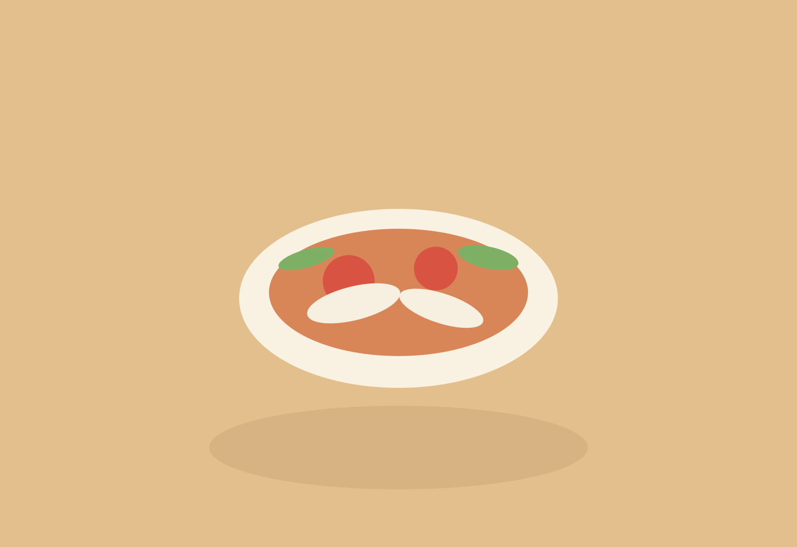
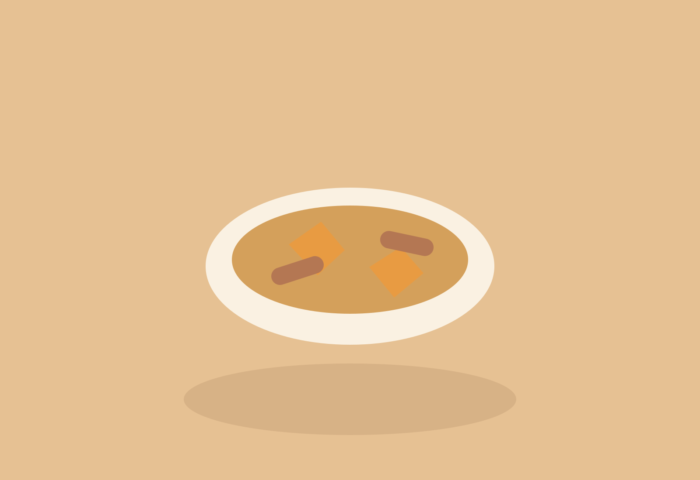
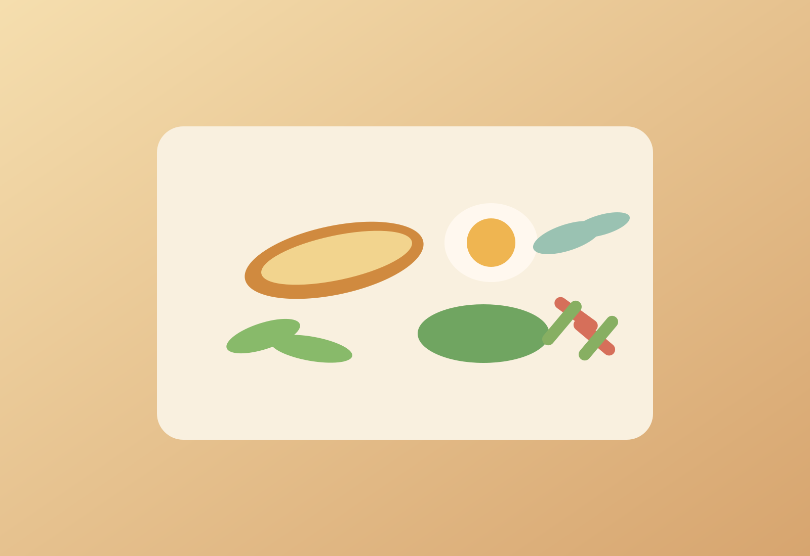

Matches
Recipes that fit the chosen ingredients
| Recipe | Type | Ingredient match |
|---|
Kitchen Notes / Recipes
This page turns the Shopping Planner into a usable cooking shelf. Recipes are grouped by style, connected to the ingredient flow of the weekly planner, and linked into blog-style reading pages.
Guided flow
Catalogue
The Shopping Planner already defines the ingredients. This catalogue turns those same ingredients into a cooking map you can actually navigate.
Broth recipes are the bowls, soups, and lighter comfort meals that depend on stock, simmering, or a more fluid base. Non-broth recipes hold the braises, stir-fries, breakfast plates, and condiments that give structure to the rest of the week.
Each recipe below is tied to ingredients already appearing in the planner, so the catalogue feels practical rather than aspirational.
Ingredient planner
A flexible planning view for days when ingredients come first and recipes come second.
Use this mode when the planner is less about a fixed menu and more about what is already in the kitchen or easiest to pick up. Choose the ingredients you have, and the page will suggest matching recipes from the catalogue.
Matches
| Recipe | Type | Ingredient match |
|---|
Available ingredients
Calculator
Meal summary
| Date | Recipe | Type | Plates |
|---|
Ingredients
| Ingredient | Total needed |
|---|
Broth recipes

Broth
Built from planner chicken, herbs, onion, ginger, and noodles.

Broth
A clean planner-friendly soup using basa fillet, tomato, herbs, and light broth.

Broth
Designed directly from the planner's tofu and seaweed staples.

Broth
Uses ribs and pumpkin from the planner to make a mellow, home-style soup.
Non-broth recipes

Non-broth
Pork and eggs from the planner turned into a rice-first braise.

Non-broth
A quick skillet built from planner beef, pumpkin, garlic, and black pepper.

Non-broth
Built from eggs, cucumber, herbs, and simple breakfast structure.

Non-broth
The small supporting sauce that wakes up grilled, boiled, or fried dishes.